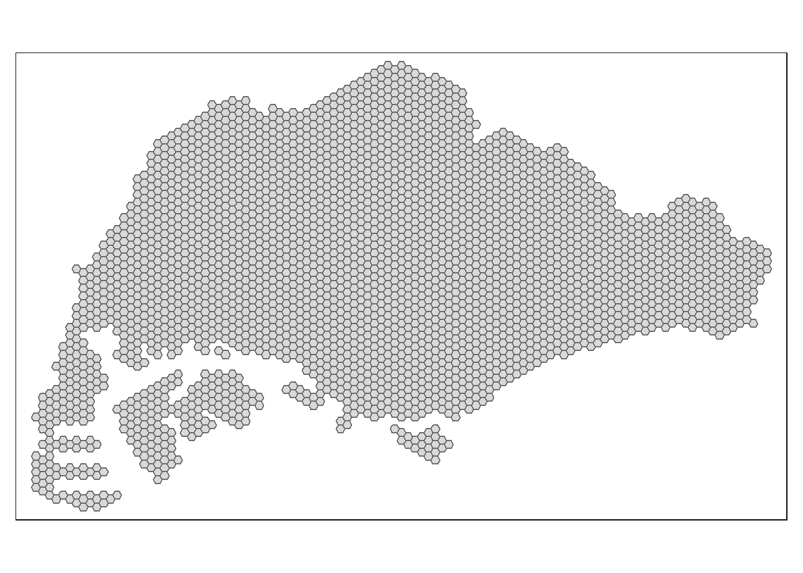

pacman::p_load(tmap, sf, tidyverse, sfdep,
Hmisc, kableExtra,
ggplot, knitr)Take-home Ex 1
Spatio-temporal Patterns of Public Bus Ridership
1 Project Brief
As city-wide urban infrastructures such as buses, taxis, mass rapid transit, public utilities and roads become digital, the data obtained can be used as a framework for tracking movement patterns through space and time. This is particularly true with the recent deployment of pervasive computing technologies such as Global Positioning System (GPS) and Radio Frequency Identification (RFID) tags on vehicles. One such case is the collection of bus routes and ridership data amassed from the use of smart cards and GPS devices available on public buses.
This movement data collected is likely to contain patterns that provide useful information about characteristics of the measured phenomena. The identification, analysis and comparison of such patterns will provide greater insights on human movement and behavior within a city. These understandings will potentially contribute to a better urban management and useful information for urban transport services providers both from the private and public sector to formulate informed decision to gain competitive advantage.
This study thus seeks to apply appropriate Local Indicators of Spatial Association (GLISA) and Emerging Hot Spot Analysis (EHSA) to undercover spatial and spatio-temporal mobility patterns of public bus passengers in Singapore.
2 Installing R Packages
The following packages are used in this exercise:
- tmap for cartography
- sf for geospatial data handling
- tidyverse for aspatial data transformation
- sfdep for computing spatial autocorrelation
- Hmisc for summary statistics
- kableExtra for formatting of dataframes
3 Importing the Data
3.1 Aspatial Data
A dataset from LTA Datamall, Passenger Volume by Origin Destination Bus Stops from August to October 2023 is used to compute bus traffic. As these were downloaded as separate .csv files, they are imported and combined into a single dataframe.
# Load each csv file into R separately
bus08 <- read_csv("data/aspatial/origin_destination_bus_202308.csv")
bus09 <- read_csv("data/aspatial/origin_destination_bus_202309.csv")
bus10 <- read_csv("data/aspatial/origin_destination_bus_202310.csv")
# Combine all rows into single dataframe
busod <- rbind(bus08, bus09, bus10)
str(busod)spc_tbl_ [17,118,005 × 7] (S3: spec_tbl_df/tbl_df/tbl/data.frame)
$ YEAR_MONTH : chr [1:17118005] "2023-08" "2023-08" "2023-08" "2023-08" ...
$ DAY_TYPE : chr [1:17118005] "WEEKDAY" "WEEKENDS/HOLIDAY" "WEEKENDS/HOLIDAY" "WEEKDAY" ...
$ TIME_PER_HOUR : num [1:17118005] 16 16 14 14 17 17 17 17 7 17 ...
$ PT_TYPE : chr [1:17118005] "BUS" "BUS" "BUS" "BUS" ...
$ ORIGIN_PT_CODE : chr [1:17118005] "04168" "04168" "80119" "80119" ...
$ DESTINATION_PT_CODE: chr [1:17118005] "10051" "10051" "90079" "90079" ...
$ TOTAL_TRIPS : num [1:17118005] 7 2 3 10 5 4 3 22 3 3 ...
- attr(*, "spec")=
.. cols(
.. YEAR_MONTH = col_character(),
.. DAY_TYPE = col_character(),
.. TIME_PER_HOUR = col_double(),
.. PT_TYPE = col_character(),
.. ORIGIN_PT_CODE = col_character(),
.. DESTINATION_PT_CODE = col_character(),
.. TOTAL_TRIPS = col_double()
.. )
- attr(*, "problems")=<externalptr> busod is a tibble dataframe consisting of the following variables:
- YEAR_MONTH: Month of data collection in YYYY-MM format
- DAY_TYPE: Category of Day
- TIME_PER_HOUR: Extracted hour of day
- PT_TYPE: Public transport type
- ORIGIN_PT_CODE: ID of Trip Origin Bus Stop
- DESTINATION_PT_CODE: ID of Trip Destination Bus Stop
- TOTAL_TRIPS: Sum of trips made per origin-Destination
code block
head(busod,10) %>%
kbl() %>%
kable_styling(
full_width = F,
bootstrap_options = c("condensed", "responsive"))| YEAR_MONTH | DAY_TYPE | TIME_PER_HOUR | PT_TYPE | ORIGIN_PT_CODE | DESTINATION_PT_CODE | TOTAL_TRIPS |
|---|---|---|---|---|---|---|
| 2023-08 | WEEKDAY | 16 | BUS | 04168 | 10051 | 7 |
| 2023-08 | WEEKENDS/HOLIDAY | 16 | BUS | 04168 | 10051 | 2 |
| 2023-08 | WEEKENDS/HOLIDAY | 14 | BUS | 80119 | 90079 | 3 |
| 2023-08 | WEEKDAY | 14 | BUS | 80119 | 90079 | 10 |
| 2023-08 | WEEKENDS/HOLIDAY | 17 | BUS | 44069 | 17229 | 5 |
| 2023-08 | WEEKDAY | 17 | BUS | 44069 | 17229 | 4 |
| 2023-08 | WEEKENDS/HOLIDAY | 17 | BUS | 20281 | 20141 | 3 |
| 2023-08 | WEEKDAY | 17 | BUS | 20281 | 20141 | 22 |
| 2023-08 | WEEKDAY | 7 | BUS | 19051 | 10017 | 3 |
| 2023-08 | WEEKENDS/HOLIDAY | 17 | BUS | 11169 | 04219 | 3 |
describe(busod)
Summary Statistics reveal that:
- There are 17,118,005 bus trip combinations recorded over 3 months
- DAY_TYPE is split into only 2 categories, ‘WEEKDAY’ and ‘WEEKENDS/PUBLIC HOLIDAY’
- Data is collected for 24 hours, starting from 0 Hrs to 23 Hrs in TIME_PER_HOUR
- There are 5075 distinct origin bus stops, and 5079 distinct destination stops
- The average number of trips per route is 20.46, with the highest value recorded being a whopping 36,668 – this points to the presence of possible outliers or anomalies, that may be cause for further analysis
3.2 Geospatial Data
There are two sources of Geospatial data used in this study:
- Bus Stop Location from LTA DataMall, providing information about all the bus stops currently being serviced by buses including the bus stop code (identifier) and location coordinates
- hexagon, a hexagon layer for mapping
Both Simple feature layers are based on SVY21 coordinate reference system (CRS).
busstop <- st_read(
dsn = "data/geospatial",
layer = "BusStop"
) Reading layer `BusStop' from data source
`C:\haileycsy\ISSS624-AGA\Take-home_Ex\the1\data\geospatial'
using driver `ESRI Shapefile'
Simple feature collection with 5161 features and 3 fields
Geometry type: POINT
Dimension: XY
Bounding box: xmin: 3970.122 ymin: 26482.1 xmax: 48284.56 ymax: 52983.82
Projected CRS: SVY21This geospatial layer shows the point location of busstops in Singapore:
qtm(busstop)
hexagon <- st_read(
dsn = "data/geospatial",
layer = "hexagon"
)Reading layer `hexagon' from data source
`C:\haileycsy\ISSS624-AGA\Take-home_Ex\the1\data\geospatial'
using driver `ESRI Shapefile'
Simple feature collection with 3125 features and 6 fields
Geometry type: POLYGON
Dimension: XY
Bounding box: xmin: 2667.538 ymin: 21506.33 xmax: 50010.26 ymax: 50256.33
Projected CRS: SVY21 / Singapore TMThis geospatial layer splits Singapore into hexagon polygon features:
qtm(hexagon)
The st_crs() function is used to check for ESPG Code and Coordinate System of both geospatial files. In order to perform geoprocessing using different geospatial data sources, both need to be projected using similar coordinate systems and be assigned the correct EPSG code based on CRS.
st_crs(busstop)Coordinate Reference System:
User input: SVY21
wkt:
PROJCRS["SVY21",
BASEGEOGCRS["WGS 84",
DATUM["World Geodetic System 1984",
ELLIPSOID["WGS 84",6378137,298.257223563,
LENGTHUNIT["metre",1]],
ID["EPSG",6326]],
PRIMEM["Greenwich",0,
ANGLEUNIT["Degree",0.0174532925199433]]],
CONVERSION["unnamed",
METHOD["Transverse Mercator",
ID["EPSG",9807]],
PARAMETER["Latitude of natural origin",1.36666666666667,
ANGLEUNIT["Degree",0.0174532925199433],
ID["EPSG",8801]],
PARAMETER["Longitude of natural origin",103.833333333333,
ANGLEUNIT["Degree",0.0174532925199433],
ID["EPSG",8802]],
PARAMETER["Scale factor at natural origin",1,
SCALEUNIT["unity",1],
ID["EPSG",8805]],
PARAMETER["False easting",28001.642,
LENGTHUNIT["metre",1],
ID["EPSG",8806]],
PARAMETER["False northing",38744.572,
LENGTHUNIT["metre",1],
ID["EPSG",8807]]],
CS[Cartesian,2],
AXIS["(E)",east,
ORDER[1],
LENGTHUNIT["metre",1,
ID["EPSG",9001]]],
AXIS["(N)",north,
ORDER[2],
LENGTHUNIT["metre",1,
ID["EPSG",9001]]]]st_crs(hexagon)Coordinate Reference System:
User input: SVY21 / Singapore TM
wkt:
PROJCRS["SVY21 / Singapore TM",
BASEGEOGCRS["SVY21",
DATUM["SVY21",
ELLIPSOID["WGS 84",6378137,298.257223563,
LENGTHUNIT["metre",1]]],
PRIMEM["Greenwich",0,
ANGLEUNIT["degree",0.0174532925199433]],
ID["EPSG",4757]],
CONVERSION["Singapore Transverse Mercator",
METHOD["Transverse Mercator",
ID["EPSG",9807]],
PARAMETER["Latitude of natural origin",1.36666666666667,
ANGLEUNIT["degree",0.0174532925199433],
ID["EPSG",8801]],
PARAMETER["Longitude of natural origin",103.833333333333,
ANGLEUNIT["degree",0.0174532925199433],
ID["EPSG",8802]],
PARAMETER["Scale factor at natural origin",1,
SCALEUNIT["unity",1],
ID["EPSG",8805]],
PARAMETER["False easting",28001.642,
LENGTHUNIT["metre",1],
ID["EPSG",8806]],
PARAMETER["False northing",38744.572,
LENGTHUNIT["metre",1],
ID["EPSG",8807]]],
CS[Cartesian,2],
AXIS["northing (N)",north,
ORDER[1],
LENGTHUNIT["metre",1]],
AXIS["easting (E)",east,
ORDER[2],
LENGTHUNIT["metre",1]],
USAGE[
SCOPE["Cadastre, engineering survey, topographic mapping."],
AREA["Singapore - onshore and offshore."],
BBOX[1.13,103.59,1.47,104.07]],
ID["EPSG",3414]]According to epsg.io, Singapore’s coordinate system is SVY21 with EPSG 3414
- busstop is projected in SVY21 with EPSG 9001 – this will require re-assignment of EPSG code to 3414
- hexagon is projected in SVY21 with EPSG 3414
This is done using the st_set_crs() function
# Assign EPSG code
busstop <- st_set_crs(
busstop,
3414
) %>%
# rename bus stop origin for easy join to main dataframe
mutate(
ORIGIN_PT_CODE = as.factor(BUS_STOP_N)
) %>%
select(
ORIGIN_PT_CODE,
LOC_DESC,
geometry
)
# Confirm EPSG code
st_crs(busstop)Coordinate Reference System:
User input: EPSG:3414
wkt:
PROJCRS["SVY21 / Singapore TM",
BASEGEOGCRS["SVY21",
DATUM["SVY21",
ELLIPSOID["WGS 84",6378137,298.257223563,
LENGTHUNIT["metre",1]]],
PRIMEM["Greenwich",0,
ANGLEUNIT["degree",0.0174532925199433]],
ID["EPSG",4757]],
CONVERSION["Singapore Transverse Mercator",
METHOD["Transverse Mercator",
ID["EPSG",9807]],
PARAMETER["Latitude of natural origin",1.36666666666667,
ANGLEUNIT["degree",0.0174532925199433],
ID["EPSG",8801]],
PARAMETER["Longitude of natural origin",103.833333333333,
ANGLEUNIT["degree",0.0174532925199433],
ID["EPSG",8802]],
PARAMETER["Scale factor at natural origin",1,
SCALEUNIT["unity",1],
ID["EPSG",8805]],
PARAMETER["False easting",28001.642,
LENGTHUNIT["metre",1],
ID["EPSG",8806]],
PARAMETER["False northing",38744.572,
LENGTHUNIT["metre",1],
ID["EPSG",8807]]],
CS[Cartesian,2],
AXIS["northing (N)",north,
ORDER[1],
LENGTHUNIT["metre",1]],
AXIS["easting (E)",east,
ORDER[2],
LENGTHUNIT["metre",1]],
USAGE[
SCOPE["Cadastre, engineering survey, topographic mapping."],
AREA["Singapore - onshore and offshore."],
BBOX[1.13,103.59,1.47,104.07]],
ID["EPSG",3414]]busstop and hexagon are now both projected in the same CRS and Assigned the correct EPSG codes.
In order to visualise each bus stop as a hexagon on the map, we perform a left join on the geospatial dataframes using st_join
busstop_sf <- st_join(hexagon, busstop)plot(busstop_sf["ORIGIN_PT_CODE"])
4 Data Preparation
To narrow down the scope of the study, only patterns pertaining to peak hour trips will be analysed. They are defined as:
| Peak Period | Day Type | Hour |
|---|---|---|
| Weekday morning peak | WEEKDAY | 6 - 9 |
| Weekday evening peak | WEEKDAY | 17 - 20 |
| Weekend/holiday morning peak | WEEKENDS/PH | 11 - 14 |
| Weekend/holiday evening peak | WEEKENDS/PH | 16 - 19 |
4.1 Aspatial Data Preparation
The following steps are taken to extract each period for analysis as a separate dataframe from busod:
ORIGIN_PT_CODE and DESTINATION_PT_CODE are in character format. These represent the busstop locations, and are thus transformed into factors (categorical data type) for further analysis
busod <- busod %>%
mutate(
ORIGIN_PT_CODE = as.factor(ORIGIN_PT_CODE),
DESTINATION_PT_CODE = as.factor(DESTINATION_PT_CODE)
)busod_agg <- busod %>%
# Categorize trips under period based on day and timeframe
mutate(period = ifelse(DAY_TYPE == "WEEKDAY" &
TIME_PER_HOUR >= 6 & TIME_PER_HOUR <= 9,
"Weekday morning peak",
ifelse(DAY_TYPE == "WEEKDAY" &
TIME_PER_HOUR >= 17 & TIME_PER_HOUR <= 20,
"Weekday evening peak",
ifelse(DAY_TYPE == "WEEKENDS/HOLIDAY" &
TIME_PER_HOUR >= 11 & TIME_PER_HOUR <= 14,
"Weekend/PH morning peak",
ifelse(DAY_TYPE == "WEEKENDS/HOLIDAY" &
TIME_PER_HOUR >= 16 & TIME_PER_HOUR <= 19,
"Weekend/PH evening peak",
"Others"))))
) %>%
# Only retain needed periods for analysis
filter(
period != "Others"
) %>%
# compute number of trips per origin busstop per month for each period
group_by(
YEAR_MONTH,
period,
ORIGIN_PT_CODE
) %>%
summarise(
num_trips = sum(TOTAL_TRIPS)
) %>%
ungroup()Using the filter() and summarise() functions, the number of passenger trips by origin busstop at different day/peak periods are saved in separate dataframes.
A left_join is then performed to the geospatial simple features dataframe busstop.
Weekday morning peak
weekday_morning <- busod %>% filter( DAY_TYPE == “WEEKDAY” ) %>% filter( TIME_PER_HOUR >= 6 & TIME_PER_HOUR <= 9 ) %>% group_by( YEAR_MONTH, DAY_TYPE, ORIGIN_PT_CODE, TIME_PER_HOUR ) %>% summarise( num_trips = sum(TOTAL_TRIPS) ) %>% ungroup()
5 Join with geospatial dataframe
weekday_morning_sf <- left_join( busstop_sf, weekday_morning, by = “ORIGIN_PT_CODE” ) %>% # change all column names to lowercase rename_with( tolower, everything() )
tm_shape(weekday_morning_sf) + tm_fill( “num_trips”, style = “quantile”, palette = “Purples” ) + tm_borders( lwd = .1,
alpha = .8)
Weekday afternoon peak
weekday_aft <- busod %>% filter( DAY_TYPE == “WEEKDAY” ) %>% filter( TIME_PER_HOUR >= 17 & TIME_PER_HOUR <= 20 ) %>% group_by( YEAR_MONTH, DAY_TYPE, ORIGIN_PT_CODE, LOC_DESC, TIME_PER_HOUR, geometry ) %>% summarise( num_trips = sum(TOTAL_TRIPS) ) %>% # change all column names to lowercase rename_with( tolower, everything() ) %>% ungroup()
Weekend/holiday morning peak
weekend_ph_morning <- busod %>% filter( DAY_TYPE != “WEEKDAY” ) %>% filter( TIME_PER_HOUR >= 11 & TIME_PER_HOUR <= 14 ) %>% group_by( YEAR_MONTH, DAY_TYPE, ORIGIN_PT_CODE, TIME_PER_HOUR ) %>% summarise( num_trips = sum(TOTAL_TRIPS) ) %>% # change all column names to lowercase rename_with( tolower, everything() ) %>% ungroup()
Weekend/holiday evening peak
weekend_ph_evening <- busod %>% filter( DAY_TYPE != “WEEKDAY” ) %>% filter( TIME_PER_HOUR >= 16 & TIME_PER_HOUR <= 19 ) %>% group_by( YEAR_MONTH, DAY_TYPE, ORIGIN_PT_CODE, TIME_PER_HOUR ) %>% summarise( num_trips = sum(TOTAL_TRIPS) ) %>% # change all column names to lowercase rename_with( tolower, everything() ) %>% ungroup()
5.1 Geospatial Data Preparation
flowchart TD A[busstop] -->|geometry| B[hexagon] -->|traffic| C(weekday morning) B -->|traffic| D(weekday afternoon) B -->|traffic| E(weekend/PH morning) B -->|traffic| F(weekend/PH evening)
busstop is a simple feature dataframe with bus stop number and geometry (longitude and latitude) attributes, which locates each bus stop as a point: